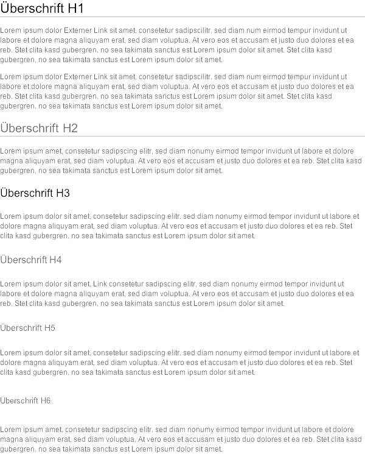
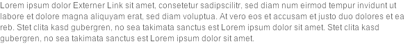
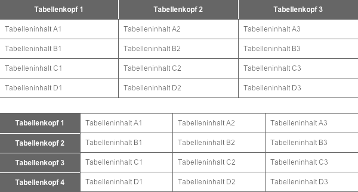
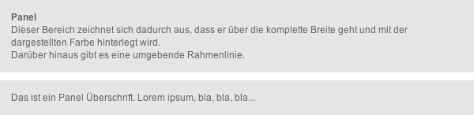
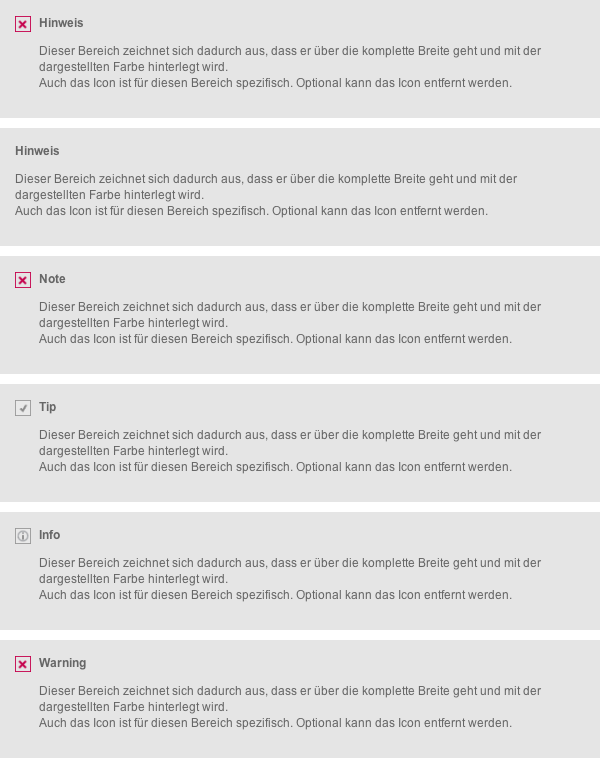

Der Seitentitel erscheint auf jeder Wiki-Seite als erstes Element. Er sollte sich in seiner Größe deutlich von der H1 unterscheiden. Darunter erscheinen in Confluence immer die Seiteninformationen, die wichtige Confluence Funktionen enthalten und daher nicht ausgeblendet werden sollten.
Die Aufzählungszeichen beim Table-of-Content entsprechen den Bulltet-Points bei einer Aufzählungsliste und müssen für alle sechs Überschrifthierarchien definiert sein.
Für die Überschriften ist die Arial - entsprechend den Corporate Design Richtlinien - im Einsatz. Unterhalb von H1 und H2 befindet sich eine Linie, die über die gesamte Seitenbreite reicht und damit die Seite strukturiert. Die sechs Überschriften unterscheiden sich deutlich voneinander, sodass eine klare Hierarchie erkennbar ist. Die Abstände unterhalb der Überschriften zu den darauffolgenden Elementen unterscheiden sich entsprechend der Schriftgrößen der Überschriften.
#ExampleContentPage-UeberschriftH1 {
font-weight:normal;
font-size:22px;
line-height:27px;
color:#000;
border-bottom:1px solid #bebebe;
}
#ExampleContentPage-UeberschriftH2 {
font-weight:normal;
font-size:20px;
line-height:25px;
color:#666;
border-bottom:1px solid #bebebe;
}
#ExampleContentPage-UeberschriftH3 {
font-weight:normal;
font-size:18px;
line-height:23px;
color:#000;
}
#ExampleContentPage-UeberschriftH4 {
font-weight:normal;
font-size:16px;
line-height:21px;
color:#666;
}
#ExampleContentPage-UeberschriftH5 {
font-weight:normal;
font-size:14px;
line-height:19px;
color:#666;
}
#ExampleContentPage-UeberschriftH6 {
font-weight:normal;
font-size:13px;
line-height:18px;
color:#666;
}

Für den Fließtext ist die Schrift Arial in 13 px gewählt. Externe Links sind unterstrichen und mit dem zusätzlichen Symbol versehen. Interne Links sind unterstrichen. Bei Mouseover färben sich beide Linktypen rot. Sofern die Abstände zwischen zwei Absätzen größer als der übliche Zeilenabstand sind, sollte das hier noch erwähnt werden.

body, p, p.fliesstext, span {
font-family: Arial, Helvetica, sans-serif;
font-size:12px;
line-height:16px;
color:#666;
}
Es sind 5 Aufzählungsebenen definiert. Die Grafiken entsprechen denen des Table-of-Contents. Der Zeilenabstand entspricht dem des Fließtextes.
Für die numerische Aufzähungsliste werden die Schriftdefinitionen aus dem Fließtext übernommen.
ul > li { }
ul > li.first { }
ul > li.last { }
ul > li > ul > li { }
ul > li > ul > li.first { }
ul > li > ul > li > ul > li { }
ul > li > ul > li > ul > li.first { }
ul > li > ul > li > ul > li > ul > li { }
ul > li > ul > li > ul > li > ul > li.first { }
ul > li > ul > li > ul > li > ul > li > ul > li { }
ul > li > ul > li > ul > li > ul > li > ul > li.first { }
Zu Beginn jeder Aufgabe befindet sich eine Checkbox, die Optik entspricht der typischen Browseroptik.
Der Tabellenkopf grenzt sich durch die Hintergrundfarbe deutlich von den sonstigen Zellen ab. Die einzelnen Zeilen sind durch graue Linien voneinander getrennt

table{
border-spacing:0;
margin-bottom:25px;
width:100%;
}
div.table-wrap table thead tr {
background-color:#666;
color:#fff;
}
div.table-wrap table thead tr th {
margin:0;
border:0;
border-left: 1px solid #fff;
}
div.table-wrap table thead tr th:first-child {
border:0;
}
div.table-wrap table thead tr th ,
div.table-wrap table tbody tr th ,
div.table-wrap table td {
padding:8px 8px 8px 8px ;
}
div.table-wrap table td {
border-bottom:1px solid #666;
border-left:1px solid #666;
}
div.table-wrap table td:first-child {
border-left:0;
}
div.table-wrap table th.first ,
div.table-wrap table th.first p {
background-color:#666;
color:#fff;
border-top: 1px solid #fff;
}
div.table-wrap table tbody tr:first-child td {
border-top: 1px solid #666;
}
div.table-wrap table tbody tr:first-child th {
border-top:0;
}
Der Zitat-Text ist nicht durch eine Box hinterlegt, sondern mit einem auffälligen Icon auf der linken Seite versehen. Die Schrift ist bewusst anders gewählt als beim Fließtext, damit dieses Element sich stärker vom Rest abgrenzt.
blockquote {
background:url('img/citation.png') no-repeat;
margin-left:0px;
padding-left:22px;
font-style:italic;
}
Die Panelbox ist eine dezente Box ohne zusätzliches grafisches Element. Bei den Abständen zum Rand ist zu beachten, dass diese mit und ohne Überschrift funktioniert und beide Varianten harmonisch aussehen.

div.panel {
background-color:#e5e5e5;
padding:14px;
margin-bottom:10px;
}
div.panel p.last {
margin:0!important;
padding:0;
}
Die vier weiteren Panelboxen unterscheiden sich in der Farbgebung un dem verwendeten Icon. Abstände und Textgrößen sind gleich.

div.panelMacro table {
margin:0!important;
padding:0;
}
div.panelMacro {
margin-bottom:10px;
padding:14px;
background-color:#e5e5e5;
}
div.panelMacro table.tipMacro {
background-color:#e5e5e5;
}
div.panelMacro td:first {}
div.panelMacro td:first + td {}